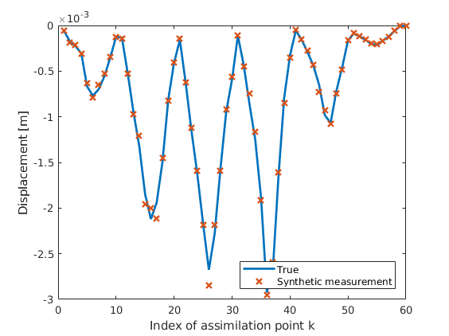
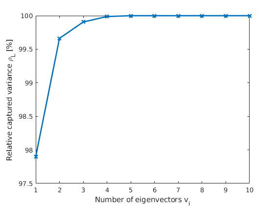

Example 9: low rank approximation of the measurement model
In this example it is shown how write a low-rank approximation of the response to ease computation of the inverse problem
Contents
0) Initiate problem
Initiate_updates_RV() % number of samples for the pdf plots (this is only used for estimating the % probability density of $F_{cM}$) N= 10000;
1) Compute covariance matrix from PCE
% Autocovariance of the measurable response from its PCE
C_y=gpc_covariance(upsilon_k_alpha, V_y);
2a) Compute the eigenvector and eigenvalues of
% Solve eigenvalue problem R = 20; [v_k_i,sigma_k]=kl_solve_evp( C_y, [], R); % Because of some small numerical errors there are some minor imaginary part of the % eigenvalues, so we get rid of the insignificant ones ind = imag(sigma_k)<10^-9; sigma_k(ind) = real(sigma_k(ind));
Warning: Not enough positive eigenvalues in KL eigenvalue problem reducing from 20 to 12
2b) Cut the trancation
% Plot ratio of captured variance per total variance h_eig = figure(); plot(cumsum(sigma_k)/sum(sigma_k)*100, 'x-', 'LineWidth', 2) xlim([1,10]); xlabel('Number of eigenvectors v_i') ylabel('Relative captured variance \rho_L [%]') % Choose from the plot the number of eigenfucntions R = 3; % Compute the percentage of represented variance sum(sigma_k(1:R)/sum(sigma_k)) % Cut the eigenvectors and eigenvalues V = v_k_i(:, 1:R); S = diag(sigma_k(1:R));
ans =
0.9991
 Compute the PCE of the projected measurement error
% project with the P matrix: P=S\V'; % Covariance of the measurement error C_E = diag(E.var); % Computed covariance of the projected error C_E_r=P*C_E*P'; % Cholesky decomposition of the covariance matrix L = chol(C_E_r, 'lower') % Define PCE basis for the projected measurement model V_e_r = gpcbasis_create('HHH', 'p', 1); % Show the basis functions $\Phi^{E}$ display('The PCE basis of the projected error'); gpcbasis_polynomials(V_e_r, 'symbols', {'eta1', 'eta2', 'eta3'}) % Define PCE coefficients of the projected error e_r_k_beta = zeros(R, gpcbasis_size(V_e_r, 1)); e_r_k_beta(:, 2:end) = L;
L =
0.0223 0 0
-0.1706 1.0123 0
-3.1067 -1.0824 5.8986
The PCE basis of the projected error
ans =
4×1 cell array
{'1' }
{'eta1'}
{'eta2'}
{'eta3'}
4) Determine the PCE of the new, projected
% Mean of the response y_k_mean=gpc_moments(upsilon_k_alpha, V_y); % PCE coefficients of the fluctuating part of Y upsilon_fluct_k_alpha=upsilon_k_alpha; upsilon_fluct_k_alpha(:,1)=0; % PCE coefficients of the projected Y upsilon_r_k_alpha = P*upsilon_fluct_k_alpha;
5) Project measurement
z_r_m = P*(z_m - y_k_mean);